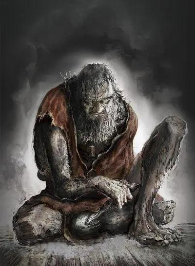

Sekiro: Shadows Die Twice is a third-person-action game.Different from the Soul games released before,the game did not have character design,ability stats upgrade,and multi-player mode,but include gear upgrading, a skill tree, and limited ability customization. Sekiro's also features stealth elements, allowing players to immediately eliminate some enemies.Besides, you have many tools to help you fight and explore.You can even revive in the fight.
In 17th century Japan, following the Sengoku period, warlord Isshin Ashina stages a coup to seize control of the land of Ashina.During this time, a nameless orphan is adopted by the wandering shinobi named Ukonzaemon Usui who named the boy "Wolf" and trained him in the ways of the shinobi.
Two decades later,because Isshin is getting older and Interior Ministry,his clan is going to collapse.To save his clan Isshin's grandson Genichiro seeks the immortal "Divine Heir" Kuro in hopes of using "Dragon Heritage" in his blood to create an immortal army.Wolf fights him but loses the duel along with his left arm.Due to he reseived Kuro's blood three years ago,he revive and was taken care by a sculptor,and the sculptor gave him awooden made prosthesis.

Wolf use his ninja prosthesis sneak into Ashina castle again to save Kuro.He fight Genichiro again,but this time,he win.Although,Kuro can leave the clan forever, but he decide to stay and remove his Dragon Heritage and prevent anybody else from fighting over him to obtain immortality.Wolf start his adventure to collect important item.
The human-type mob fight is really intense.The sound that the katana made is awesome.The game is really hard before you are used to fight,because it is very different compare to his game before(I played Dark Souls III).I have not finish the game,but I am sure I can finish the game faster than Dark Souls III,because I really like Japan's culture,the background,the style,really attract me a lot.